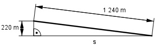

Pythagoras Aufgabe 22 Eine Rutschbahn ist 1 240 m lang und überwindet einen Höhenunterschied von 220 m. Berechnen Sie die horizontale Entfernung s zwischen Start und Ziel und das Gefälle g in Prozent.

1 2402 m2 = 2202 m2 + s2 | - 2202 m2 s2 = 1 2402 m2 - 2202 mm2 = 1 489 200 m2 |√ s = = 1 220,3 m 220,3 m g = ----------- = 0,18 --> g = 18 % 1 220,3 m